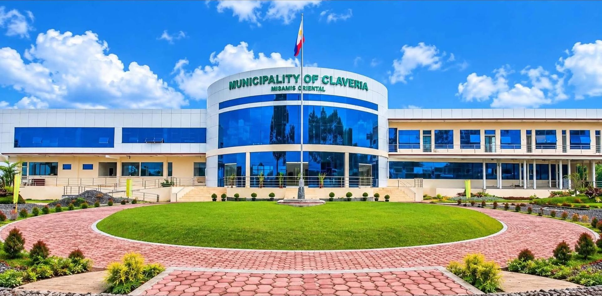
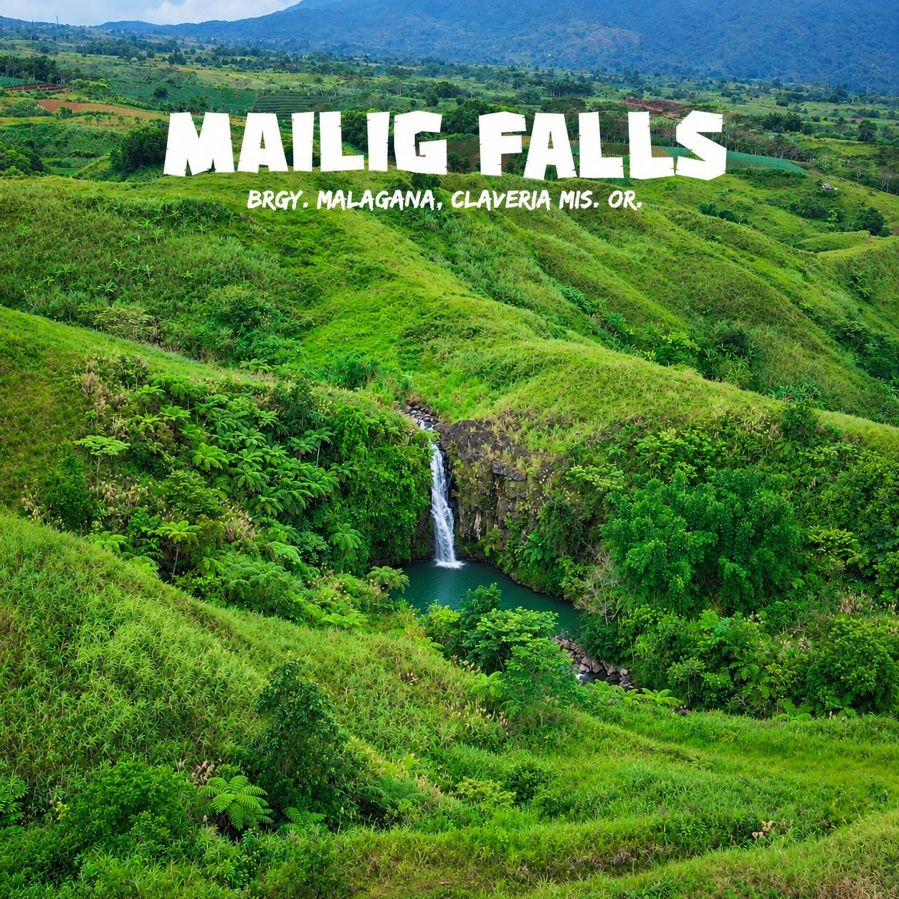
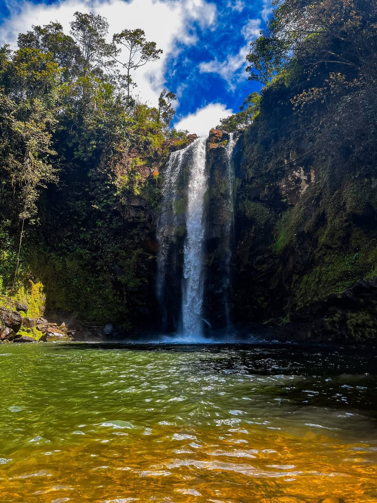

Escape to Claveria
Cool mountain air, hidden waterfalls, cozy cabins and the best café stops along Route 955 — your complete guide to Claveria, Misamis Oriental.
What do you want to explore today?
Three ways to experience the Claveria highlands — pick a trail, a bed, or a brew.

Staycations & Resorts
Cabins, campsites, farm resorts and vacation houses in the Claveria highlands.

Waterfalls
Cool, refreshing falls scattered across Claveria's barangays.

Coffee Shops & Restaurants
Café stops and resto-bars perfect for breaks along Route 955.
Featured spots
A few favorites from the community — from bonfire camps to glass-house cafés.
5 photosBaqs&Bonfires
Exclusive mountain campground with bonfire nights Sitio Sumpong, Brgy. Madaguing, Claveria, Misamis Oriental 4 photos
4 photosHiraya Farm Escape
Highland leisure farm with ATV, go-karts & rainbow slides Barangay Lanise, Claveria, Misamis Oriental 4 photos
4 photosCabinscape Ridge Resort
Nordic-inspired glamping in the misty highlands Zone 1, Brgy. Mat-i, Claveria, Misamis Oriental
3 photosLantawon Falls
The falls inside ApoVista Forest Park ApoVista Forest Park and Campsite, Aposkahoy, Claveria, Misamis Oriental 4 photos
4 photosLone Wolf Cafe
Claveria's first 24/7 introvert-themed coffee shop Brgy. Luna, Claveria, Misamis Oriental (in front of the Luna Barangay Hall, along Route 955) 4 photos
4 photosSkye 88 Cafe
Glass-house café inside Hiraya Farm Escape Inside Hiraya Farm Escape, Route 955, Barangay Lanise, Claveria, Misamis OrientalThe highland escape of Misamis Oriental
Route 955 corridor
Most attractions line the scenic Gingoog–Claveria Road — easy to hop from falls to café to cabin in one day.
Cool mountain weather
Claveria's highlands stay misty and cold — perfect for bonfires, hot sikwate and cozy overnight stays.
Falls & springs
From free-entry Mailig and Bindol Falls to cottage-side Nasaad — bring a towel and a picnic.